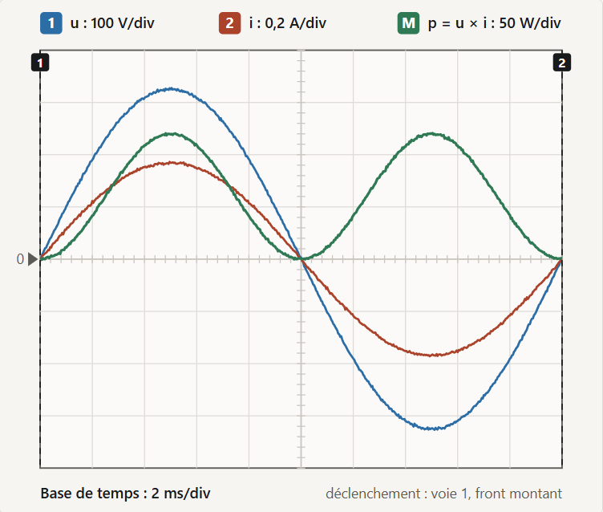
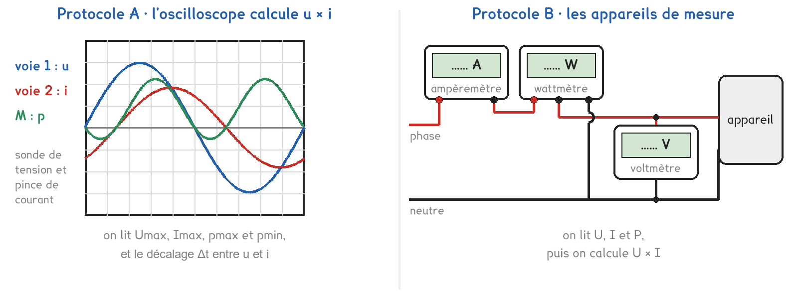

1re ou Tle Bac Pro · MELEC, CIEL, OBM, MMCM, MVTR · TP sur simulation SIM-09
En alternatif, la puissance consommée par un appareil vaut-elle toujours U × I ?
2 figures
Sujet. Au garage, un vieux tube fluorescent de 36 W éclaire l’établi. Au salon, une lampe à incandescence de 60 W éclaire la table. Mesuré au multimètre, le courant du tube est pourtant plus grand que celui de la lampe.
Problématique : en alternatif, la puissance consommée par un appareil vaut-elle toujours U × I ?
La simulation. Ouvrir « La puissance en alternatif » : le fichier puissance-alternatif.html, sur l’ENT ou la clé du professeur.
a) Compléter les grandeurs du secteur. On rappelle que Umax = U × √2 et T = 1 ÷ f.
| Valeur efficace U | Valeur maximale Umax | Fréquence f | Période T |
|---|---|---|---|
| 230 V | ……………… V | 50 Hz | ……………… ms |
Voici l’écran de l’oscilloscope de la simulation, lampe de 60 W en marche. La voie M affiche le produit p = u × i, calculé à chaque instant.

b) Relever les valeurs extrêmes des trois courbes : divisions, puis valeur.
| La courbe | u, en haut | i, en haut | p, en haut | p, en bas |
|---|---|---|---|---|
| Divisions | ……… | ……… | ……… | ……… |
| Calibre | 100 V/div | 0,2 A/div | 50 W/div | 50 W/div |
| Valeur | Umax = ……… V | Imax = ……… A | pmax = ……… W | pmin = ……… W |
La puissance que l’appareil consomme, la puissance active, est la moyenne de p.
c) Calculer la moyenne (pmax + pmin) ÷ 2 et la comparer aux 60 W de la lampe.
Deux protocoles répondent à la même question. Une partie de la classe prend A, l’autre prend B, et on compare à la fin.

Protocole A · l’oscilloscope. Une sonde prend la tension u, une pince prend l’intensité i, et l’oscilloscope calcule leur produit p = u × i. On lit les maxima et le décalage Δt entre u et i.
Protocole B · les appareils de mesure. Un voltmètre, un ampèremètre et un wattmètre donnent directement U, I et la puissance P consommée. On calcule ensuite U × I.
d) Compléter le tableau pour comparer les deux protocoles.
| Protocole A | Protocole B | |
|---|---|---|
| Ce qu’on lit | …………………………… | …………………………… |
| Il faut calculer U et I | oui · non | oui · non |
| On voit le décalage entre u et i | oui · non | oui · non |
Le choix se fait maintenant, avant d’ouvrir la simulation.
e) Quel protocole prenez-vous ? Justifier en une phrase.
Je prends le protocole ……… parce que ……………………………………………………………………
f) Avant de mesurer : pour le tube fluorescent, que prévoyez-vous ? Entourer.
P = U × I · P plus petit que U × I · P plus grand que U × I
Avant de commencer. Ouvrir la simulation, cliquer sur « Mettre en marche », puis sur l’onglet de votre protocole. L’appareil se choisit dans « L’appareil branché ».
Le décalage Δt se convertit en angle, le déphasage φ = 360° × Δt ÷ T, avec T = 20 ms.
g) Protocole A seulement : relever les curseurs, puis calculer φ et cos φ.
| L’appareil | Umax (V) | Imax (A) | pmax (W) | pmin (W) | Δt (ms) | φ (°) | cos φ |
|---|---|---|---|---|---|---|---|
| Lampe | |||||||
| Ventilateur | |||||||
| Tube |
En A, U = Umax ÷ √2, I = Imax ÷ √2 et P = (pmax + pmin) ÷ 2. En B, U, I et P se lisent.
h) Compléter le tableau commun aux deux protocoles.
| L’appareil | U (V) | I (A) | P (W) | U × I (VA) | P ÷ (U × I) |
|---|---|---|---|---|---|
| Radiateur, en B | |||||
| Lampe | |||||
| Ventilateur | |||||
| Tube fluorescent |
Une consigne de schéma, pour finir la partie 3.
i) Schématiser le circuit : le secteur, l’appareil, l’ampèremètre et le voltmètre.
En protocole B, ajouter le wattmètre. L’appareil se dessine comme un rectangle.
Le schéma se dessine sur la feuille du TP.
j) Pour quels appareils P = U × I ? Votre prévision f est-elle confirmée ?
k) Avec un groupe de l’autre protocole, comparer cos φ (A) et P ÷ (U × I) (B).
l) Au laboratoire, qu’imposerait un vrai montage que la simulation ne montre pas ?
m) Répondre à la problématique en deux phrases.
Ce que ce TP a établi, et qui vaut pour tout appareil branché sur le secteur :
À RETENIR
La puissance active, celle que l’appareil consomme, est la moyenne de p = u × i.
En général, u et i sont déphasées d’un angle φ : P = U × I × cos φ, avec U et I efficaces. Le facteur de puissance est cos φ ; le wattmètre mesure P.
Pour un appareil résistif, radiateur ou lampe à incandescence, φ = 0 et P = U × I.
TP sur simulation de physique-chimie. Le travail se fait sur la feuille du TP : cette page en est la version à l'écran, sans les lignes à remplir. Rien n'est enregistré.